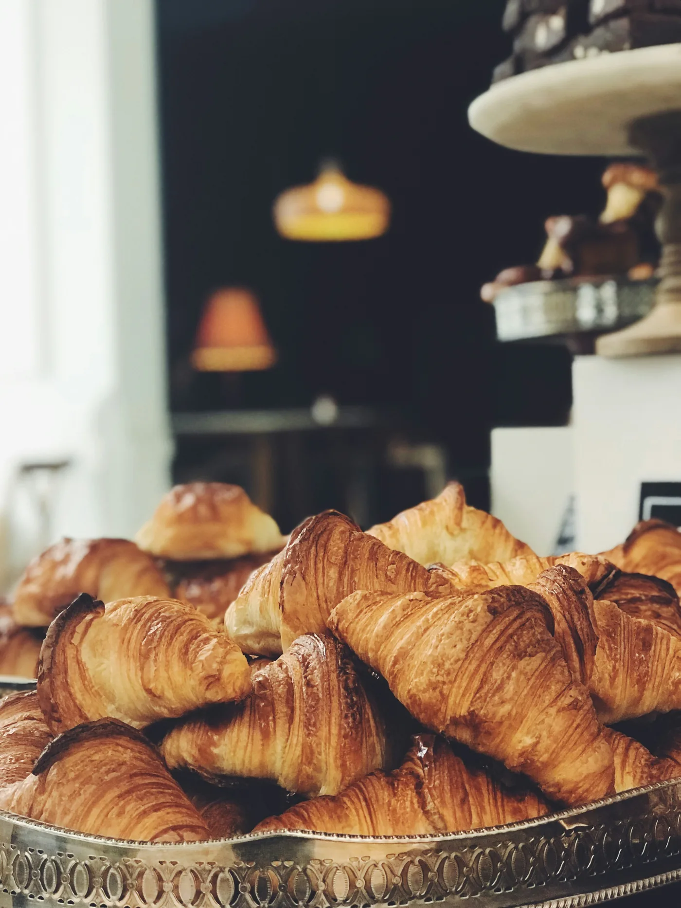
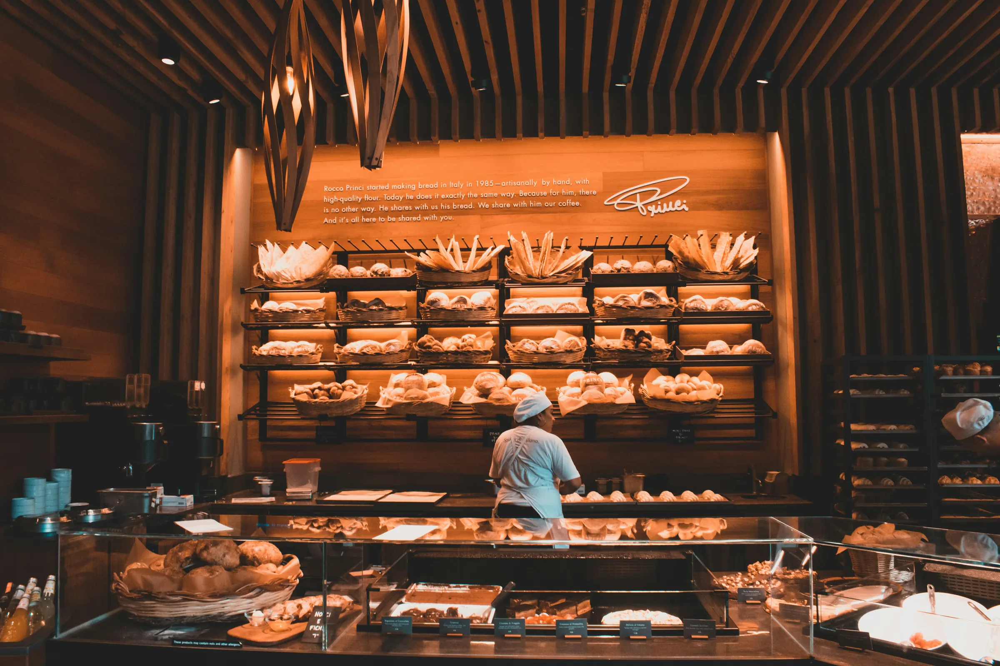
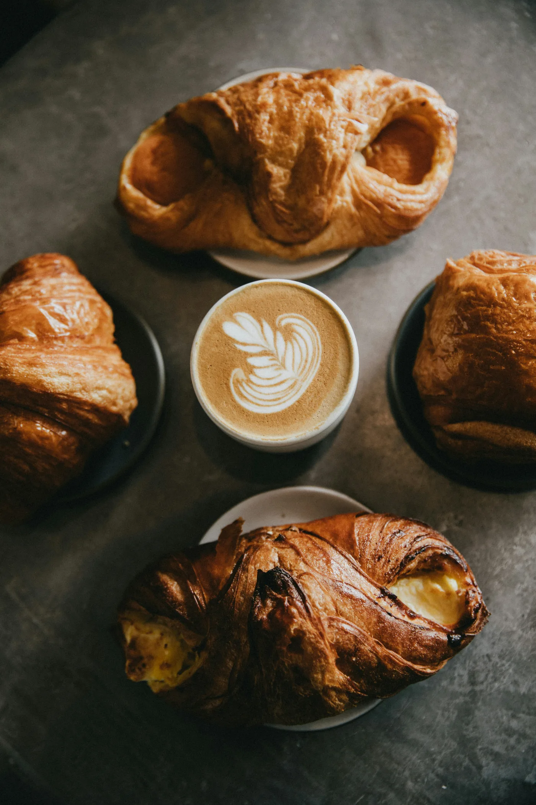
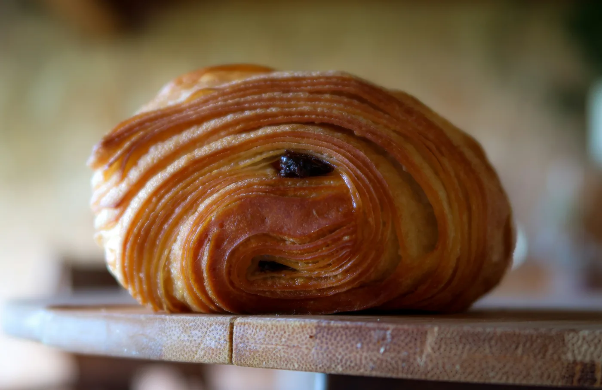
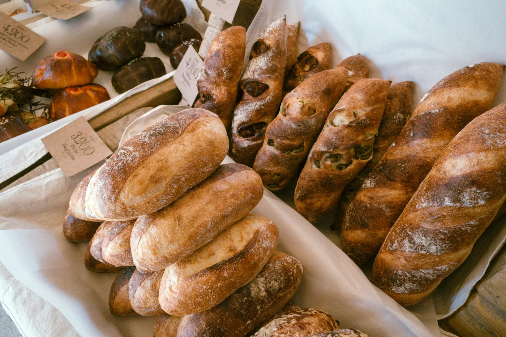
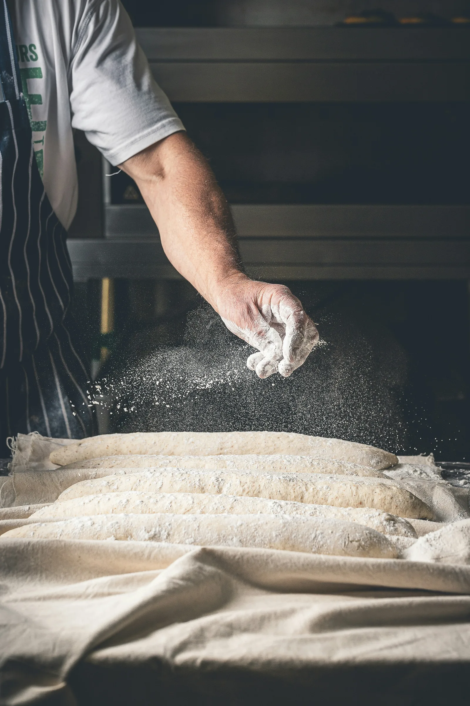
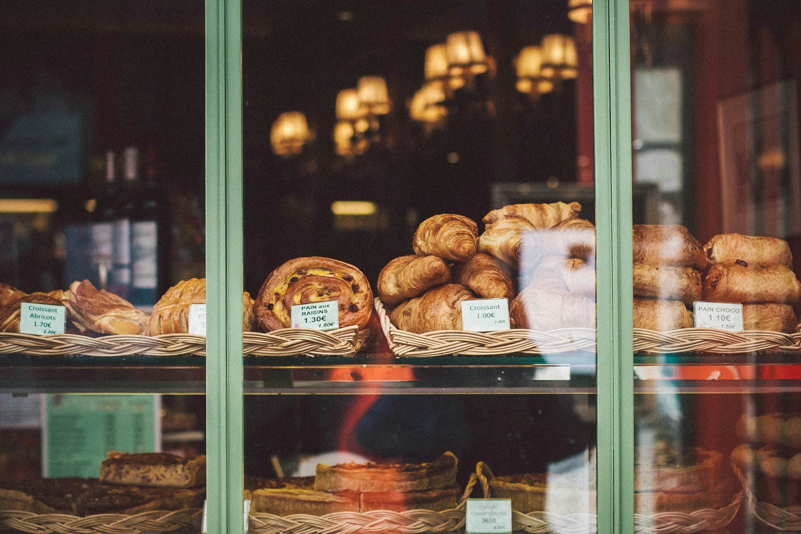

Croissant · Feuilletage 72h
L'Original
Croissant pur beurre AOP Charentes-Poitou. Trente-deux couches, feuilletées sur trois jours. Le point de départ de tout le reste.

Boulangerie artisanale — Lyon, Presqu'île
Viennoiseries d'auteur, pains au levain et gourmandises de saison. Façonnés chaque matin, rue des Marronniers.
La collection
Quatre pièces signatures. Chacune a son nom, sa recette, son geste. Comme des objets, disposés un à un.

Croissant · Feuilletage 72h
Croissant pur beurre AOP Charentes-Poitou. Trente-deux couches, feuilletées sur trois jours. Le point de départ de tout le reste.
Croissant · Cœur praliné
Sésame torréfié dans la pâte, cœur de praliné coulant. Une amertume grillée qui répond au sucre. Notre plus vendu du samedi.


Pain au chocolat · Revisité
Ganache chocolat blanc au citron de Menton, basilic frais ciselé à la sortie du four. Le classique, pris à contre-pied.
Brioche · Sucre perlé
Brioche feuilletée à la fleur d'oranger, sucre perlé caramélisé sur les arêtes. Moelleuse dedans, croquante dessus. À partager — ou pas.


Notre histoire
Installés rue des Marronniers depuis 2019, on travaille des farines bio, du beurre AOP Charentes-Poitou, et le temps qu'il faut : 72 heures de fermentation pour chaque pâte.
Pas de surgelé, pas de pré-mix. Juste de la farine, de l'eau, du sel — et le savoir-faire qui va avec.
« On ne triche pas avec le temps. Le beurre non plus. »

Ça sent le beurre dès le trottoir.
Venez nous voir
Horaires